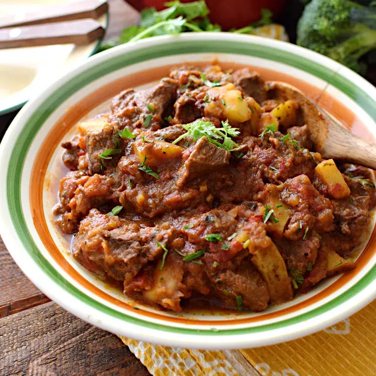
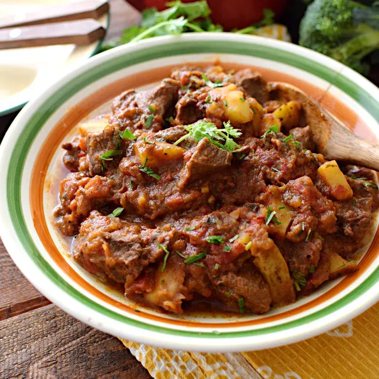

Página web oficial de El Sabor de Barrio, el rincón con la comida caribeña más sabrosa de Montevideo...
BIENVENIDOS
Ubicados en el corazón de Montevideo Av.18 de Julio,Montevideo,Uruguay, ofrecemos un ambiente acogedor y un menú lleno de sabores tradicionales. Nuestro equipo está listo para servirte con una sonrisa y asegurarse de que tengas una experiencia inolvidable.
Lunes a Viernes: 12:00 - 22:00
Sábados: 10:00 - 23:00
Domingos: Cerrado
 
